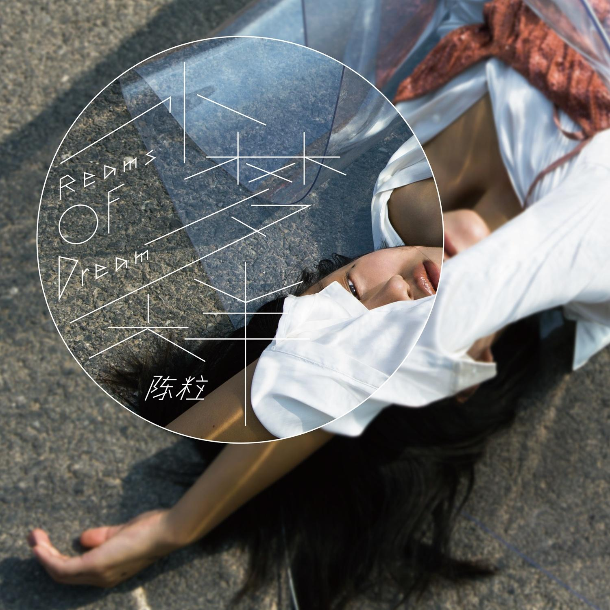

YOUR FREQUENCY每一种热爱
都有回响
探索更多音乐 ↓都有回响
移动鼠标，扰动你的声音场。
04 / DAILY INSPIRATION发现 · 从一首好歌开始
Selectedfor your day.
给今天，挑一张情绪唱片。
不追赶别人的播放列表。
慢一点，听听今天的自己。
编辑选听 · 非个性化推荐
4 张唱片，4 种心情
05 / CURATED WORLDS
总有一个世界，
与你同频。
歌单是另一种日记。
把散落的心情，收进同一段旅程。
06 / VOICES WE LOVE点击海报 · 走近音乐人
Voiceswith a soul.
他们把生活，写成了歌。
听见独特的表达，
也听见具体而鲜活的人。
CHEN HONGYU / 陈鸿宇
07 / ORIGINAL VOICES
一把吉他。
一个人的旷野。
从《浓烟下的诗歌电台》出发，走进陈鸿宇的音乐表达。民谣可以关于远方，也可以关于脚下的生活。
那些值得被听见的声音，不必长得一样。在网易音乐人，继续发现新的名字。
探索网易音乐人↗08 / THE ART OF LISTENING给一张专辑，完整的时间
SIDE A — SLOW DOWN
让时间，
转慢一点。
封面、曲序、前奏与尾声。
一张专辑的故事，值得从头听到尾。
唱片视觉互动 · 不播放商业录音
33⅓ RPM
AN ENTIRE WORLD IN ONE RECORD
AN ENTIRE WORLD IN ONE RECORD
09 / FROM FIRST TRACK TO LAST不只收藏单曲，也收藏一段故事
2023 青岛热爱全开音乐节 · 历史现场氛围图
11 / NEVER LISTEN ALONE音乐 · 让表达发生
你听懂的那一秒，
有人也在。
有些话，说给一首歌听。
有些共鸣，在评论里遇见。
不用立刻变得很厉害。
今天也有一首歌，
陪你慢慢来。
耳机里有一座城市。
每次播放，
我都重新路过你。
今天没有说出口的话，
好像都藏在了
这段前奏里。
本页为原创情绪文案，并非摘录真实用户评论。点赞仅保存在当前页面。
12 / EVERY SOUND CONNECTS从一首歌，到一个新世界
喜欢，
从不只有一种。
人声、吉他、节奏、诗意。
沿着一条声音的线索，
发现下一位喜欢的音乐人。
选择一个声音节点，看看下一站。
13 / YOUR EVERYDAY SOUNDTRACK从早到晚，音乐一直在
07:30
早安，给新的一天一点期待。
把每个时刻，
过成喜欢的样子。
打开此刻的歌单 ↗14 / TAKE YOUR MUSIC WITH YOU